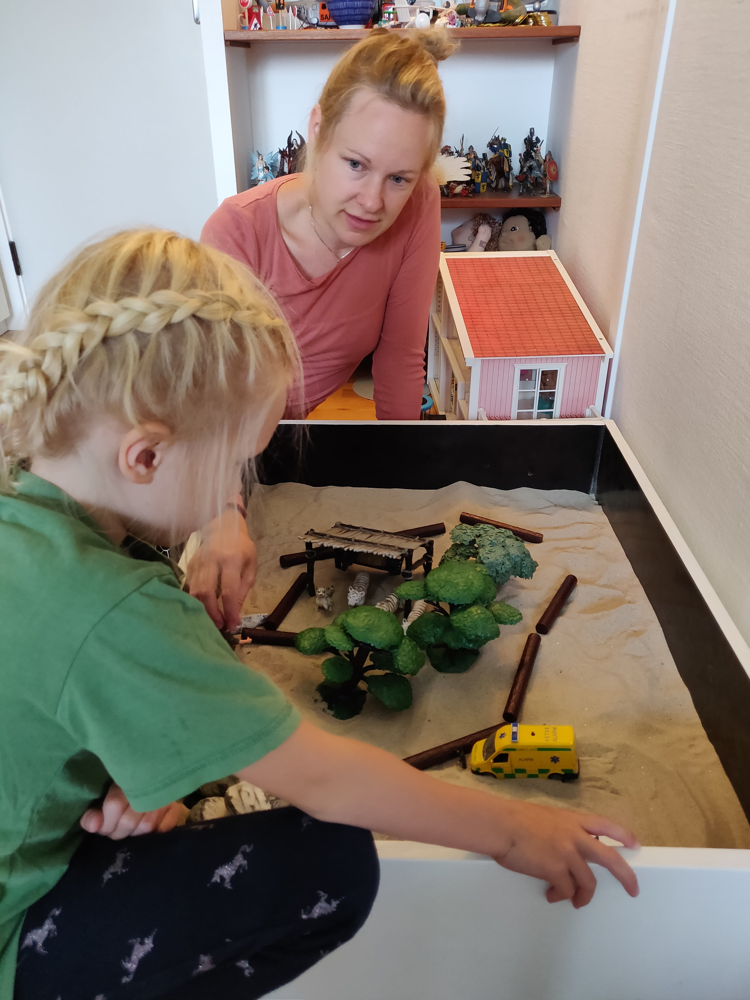
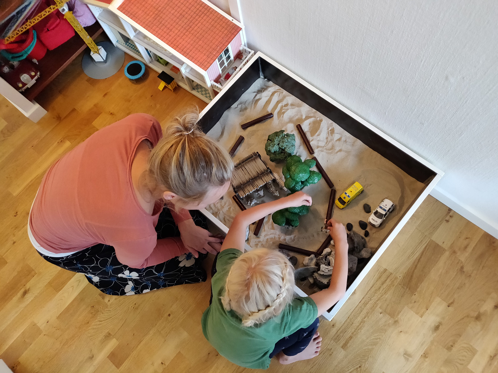

 Oplever du, at dit barn har svært ved at styre sin vrede, at det lukker sig inde med sig selv eller har svært ved at indgå i relationer til andre børn? Har jeres familie været ude for et dødsfald, alvorlig sygdom, en skilsmisse eller andet som du er i tvivl om dit barn er påvirket negativt af? Årsagerne til, at børn kommer i legeterapi, er mange – det kan være følelsesmæssige, adfærdsmæssige eller sociale problemstillinger. Det kan også være sorg, tab, krise, ulykke, overgreb, skilsmisse eller alvorlig sygdom i den nære familie eller for barnet selv. Dit barn kan reagere med uhensigtsmæssig adfærd, voldsomme vredesudbrud, tristhed og med tilbagetrækning, og det kan være hans/hendes bedste forsøg på at håndtere en vanskelig og smertefuld situation. Reaktionerne kan give dit barn luft for sine frustrationer nu-og-her, men på længere sigt kan de ellers naturlige reaktioner give dit barn problemer med at fortsætte sin naturlige udvikling. Under de trygge rammer, som jeg skaber for dit barn i legeterapien, vil han/hun få mulighed for at undersøge det svære, udforske nye måder at bære det med sig på og udvikle nye og mere holdbare relationsmønstrer.

Et legeterapeutisk forløb begynder med en indledende samtale mellem
forældrene eller de primære omsorgsgivere for barnet og mig. Her vil jeg
gerne bede jer fortælle om jeres barn, dets udvikling og hvilke
vanskeligheder I ser og oplever. Dernæst vil jeg som regel lave en
legeobservation, som typisk forløber over 3 gange, hvor barnet skal
komme hos mig á 45min pr. gang. For nogle børn glider legeobservationen
over i et legeterapeutisk forløb. Efter legeobservationen vil jeg
invitere jer forældre/primære omsorgsgivere ind til en samtale. Her vil
vi sammen drøfte barnets udfordringer, styrker og det videre forløb.
Sideløbende med et legeterapeutisk forløb, vil der være vejledende
samtaler, således, at I som forældre får indsigt i jeres barns arbejde i
terapien, og derved er bedre i stand til at understøtte udviklingen.
Legen er barnets foretrukne aktivitet. Barnet udforsker og udvikler nye
sider af sig selv og viden om verden omkring sig gennem leg. For barnet
er det som regel lettere at udtrykke sig gennem leg, end gennem samtale.
Når barnet leger, udtrykker det tanker, følelser og oplevelser gennem
sin leg. Børn, der har været udsat for et stort følelsesmæssigt pres,
har oplevet svigt eller vanskelige situationer, kan enten blive hæmmet i
deres leg og udfoldelse, eller de kan blive destruktive i legen. Gennem
legeterapi og i relation til terapeuten vil barnet få mulighed for at
vende tilbage til den udforskende, udviklende og kreative leg og derved
atter kunne indgå i konstruktivt samvær med voksne og andre børn.